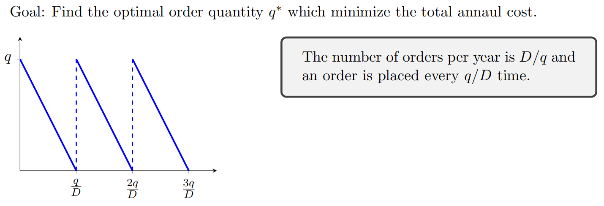
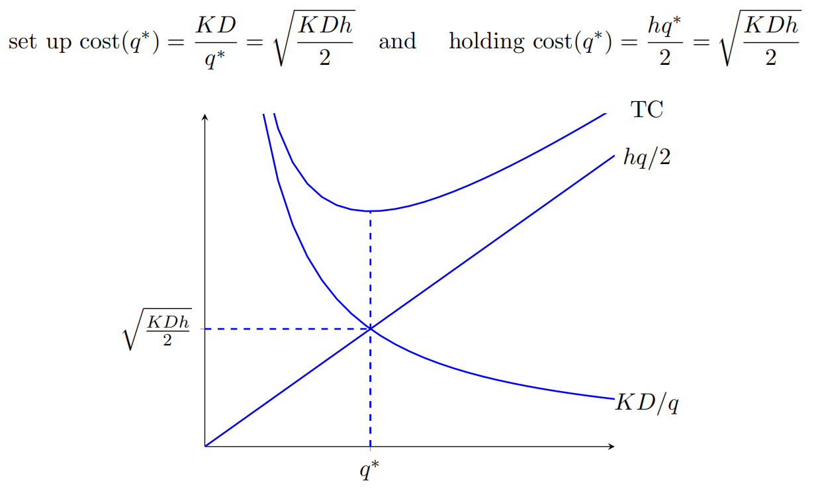
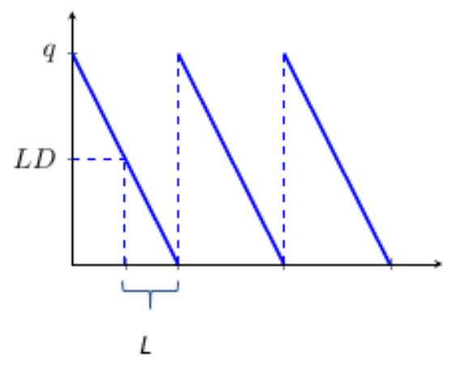
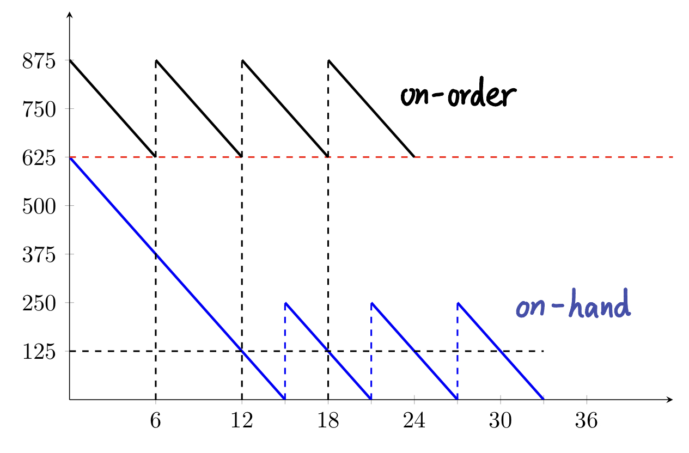

What is backorder?
A backorder is an order for a good or service that cannot be filled at the current time due to a lack of available supply. The item may not be held in the company's available inventory but could still be in production or in transition

1.1 General Case (Lead Time = 0)
EOQ(Economic Order Quantity) q∗=h2KD
How we get that?
Let TC represent the annual total cost. Note that this total cost depends on q, thus： TC(q)=setup cost+annual purchasing cost+annual holding cost=KqD+pD+h2q
Then we could get EOQ by solving: dqdTC(q)=−q2KD+2h=0
Why EOQ is a minimization solution? second derivative > 0
Some interesting facts:
Even the equation of q∗ is not related to p, while p will often affect h and then affect q∗
The optimal q is achieved when the setup cost and holding cost are equal
这是由 TC(q) 的公式决定的，如果再加一项关于 q 的公式就不会这么巧了

1.2 Lead Time > 0
When L>0 and is a constant, we should place an order when the stock level is large enough to cover the demand during the lead time which is LD. Thus the reorder pointr is r=LD
If LD<EOQ, r=LD
If LD>EOQ, r=LD mod EOQ

For a long lead time, the pipline cost(or trasit cost) is sometimes considered and is equal to q(Lh)(D/q)=DLh
How do we simulate an inventory policy with LD>q? Keep on-order inventory and place an order whenever the on-order inventory is equal to r on-order = on-hand + backordered(negative) + in-transit
For example, when q=250,r=625, when start at on-hand inventory at OHI=625, we need to immediately order a q. Therefore our on-order inventory at start will be q+r=875

1.3 What if ...?
What if D is not a constant but a random variable? EOQ is recommended when
squared coefficient of variantion (SCV) =Var(D)/E2[D]<0.2
OR standard diviation (std) <0.45E[D]
2. Gaussian Demand Process
Definitions: Let D(t) represent the demand during time t (in years) and E[D(1)]=dˉ,Var[D(1)]=σd2. Then a Gaussian demand process has D(t)∼N(tdˉ,tσd2)